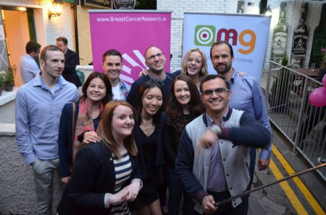

In the third and final post for the Industry of the Month spotlight on Marketing (Read: post one and post two), we interviewed Maricka Burke-Keogh, founder of Online Marketing in Galway (OMiG) and Head of Digital at Altocloud in Galway, Ireland. Both are customers of Teamwork.com.
OMiG is a not-for-profit network created and run by volunteers to allow local marketers and businesses to share best practices, announce new tools, and network. They work on a wide range of projects and support local and national businesses to elevate the work of their respective in-house marketing projects and development plans. It is innovative and thriving. Inspired that they are individuals volunteering to work together on projects, we wanted to ask how Teamwork Projects helps unite them in their efforts. After all, they are trying an extreme approach to collaborative remote working, so a perfect interview!
About Maricka Burke-Keogh
First, we asked Maricka a bit about herself and her approach to her work. Some of these questions overlap with those we ask in our Leadership Advice interviews, which we’ve done for industry leaders in higher education (August 2015) and industry leaders in marketing (September 2015).
What motivates you?
Maricka Burke-Keogh: People’s talents motivate me. I think with the amazing talents in the world we can do great things.
How do you encourage creative thinking from your team and company?
Maricka Burke-Keogh: I aim to remove barriers, all level of staff should be able to contribute if they have a good idea.
What advice would you give someone going into a leadership position for the first time?
Maricka Burke-Keogh: Understand emotional intelligence – As a leader, understanding the dynamics of teams is essential. It is also essential as a leader that you are self-aware, self-awareness always helps dynamics within a team.
Where do you see the marketing field heading in the future?
Maricka Burke-Keogh: Digital Marketing is now the norm, now with endless tools we have access to more data than ever before. In the future, I see us utilising and processing data a lot better and refining it more efficiently with new methods, tools and skills we have acquired.
What do you love about your work?
Maricka Burke-Keogh: Having incredible teams around me and learning more everyday from the different sets of strengths and weaknesses we have within a team.
What low-tech approach to tasks do you love?
Maricka Burke-Keogh: Setting the end goal and working back from the end goal. In most cases, nothing is impossible.
What are your biggest time management demands?
Maricka Burke-Keogh: Meetings with different teams.
What approach helps you achieve work-life balance?
Maricka Burke-Keogh: Making a clear definition between work and home, it can be difficult to do but I always aim to have a few hours every evening where I look at no emails. I also work hard during the week to make sure work does not fall into the weekend. I am still learning everyday on how to improve work life balance. I am getting there, so ask me again next year 😉 .

Why OMiG uses Teamwork Projects
With the getting to know you portion of our interview done, we wanted to get to the heart of how Teamwork Projects meets the needs of OMiG and its volunteer marketer network. The unique structure of their organization makes remote working essential and collaboration integral to success, so they rely heavily on Teamwork Projects as a central organizational hub to keep track of the work. Though they only started using Teamwork Projects in June 2015, their reliance on and appreciation of the platform grows each day.
Why did you choose Teamwork Projects to help run your business?
Maricka Burke-Keogh: We chose Teamwork Projects to help run OMiG due to the increased number of volunteers and numerous tasks involved with our larger events such as OMiG’s upcoming Digital Summit in January 2016 and OMiG’s Awards in April 2016. We also need a system that was fast to implement, and easy to learn by our volunteers as we don’t have time to sit down for hours to learn a new system. One of the major benefits we’ve found is there is no ambiguity about who does what now – everything is tasked out with timelines, email notifications are sent with all updates, and you can even comment into the system from your email. Because Teamwork Projects keeps the entire team organized in this way – we don’t need to think about who’s doing what, or what’s next – we can now just focus on doing what needs to be done.
Why did you make the switch to Teamwork Projects?
Maricka Burke-Keogh: We tried Producteev, but they lack features. We tried Teamwork Projects on a free trial basis and fell in love. We’ve been falling in love with it ever since. It’s was so fast to learn and felt familiar after just a few days of use.
Teamwork Projects just works there in the background, quietly keeping us organized, so we can stay focused on making the best use of our volunteer time. – Maricka Burke-Keogh, OMiG
How OMiG uses Teamwork Projects
In what department or way do you use Teamwork Projects?
Maricka Burke-Keogh: We are a non-profit organisation that brings together marketing professionals in the Galway region to network, share ideas, and learn from each other. So we use Teamwork Projects to set out tasks and deadline so that every volunteer know exactly what their responsibilities are and the deadline for each. Most of our projects revolve around event planning, and marketing our own group.
What kinds of projects and tasks do you manage with Teamwork Projects?
The majority of the projects we manage with Teamwork Projects are event planning related – the logistics, getting sponsorship, liaising with speakers and recruiting volunteers. The tasks would be writing blog posts, design work for Social Media, posters, photography, setting up event page, writing press release and promotional tasks for both online and offline.
What you like about Teamwork Projects?
Maricka Burke-Keogh: So, firstly, Teamwork Projects came recommended to us as being intuitive and very effective, and because we are a volunteer team and our time is limited, we don’t have time to learn complicated systems. Once we started using the system we saw just how easy it is. I mean it’s fast – you can have your project outlined, tasks created, assigned and timelines added so fast, and obviously this then gives us more time to work on OMiG.
What are your favorite features?
Maricka Burke-Keogh: For me, it’s the Dashboard – I’m straight in, check today’s tasks and upcoming tasks, and then I can get straight to work. It’s simple.
I also like that Teamwork Projects keeps us organized in such a simple way, and has cut out so much email. We used to lose track of the odd email, or have to go searching our inbox for for different files, but now it’s all in one place. There is obviously no getting away from email, but Teamwork.com has somehow managed to get the balance right – you are both notified through email, but can also take action directly through that same email.
How have you set up your Teamwork Projects to meet your particular needs?
Maricka Burke-Keogh: We keep it really simple. We use a separate project for each event, one project for marketing OMiG, and another for any miscellaneous tasks. We add all volunteers to all projects, as we value transparency and it also keeps everybody informed. If anyone is not sure of something, they can go and check it out. We obviously limited what different people can edit, but for the most part we keep it as open as possible.
Would you recommend it to other businesses?
Yes, definitely. In fact, we have already shared Teamwork.com with our 3,500 followers within the OMiG network. We shared it on our Facebook & Twitter recently.
If you could sum up your feelings about and happiness for Teamwork Projects in three sentences, what would you say?
Maricka Burke-Keogh: You know when something just works? It sits there quietly and does exactly what it’s supposed to do and doesn’t cause a fuss. This is how I’ve found Teamwork Projects so far. I open a project, and the team, assigned the tasks, and, for the most part, I’m done – everybody gets notified and they can then do what they need to do.
In Closing
Maricka and her colleagues at OMiG work as a collective and coordinate extensively online, so the key to their successful and seamless collaboration is their passion for helping businesses improve their marketing and organizing their work on Teamwork Projects. Having a reliable, fast, flexible platform to manage their projects, tasks, and events is at the core of their model as a not-for-profit network of volunteers.
If you enjoyed this post, you’ll probably love reading our interview with Jay Baer of Convince & Convert or our interview with Jayne Burch of Marketing Monsoon and Dave Davies of Beanstalk Internet Marketing, Inc.. Also for our Marketing Industry of the Month, we have a guest post about structuring a marketing plan in Teamwork Projects, and aninterview with 12 marketing industry leaders, and a book review of Findability by Randy Milanovic.
Please check back next month when we shine the spotlight on the unsung heros of customer service for our October Industry of the Month. In the meantime, to learn more about Teamwork Projects with our free 30-day trial, click here.